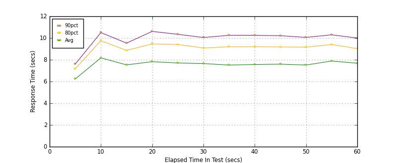
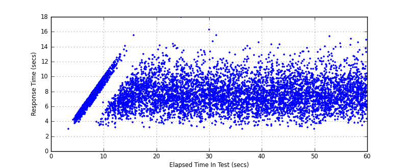
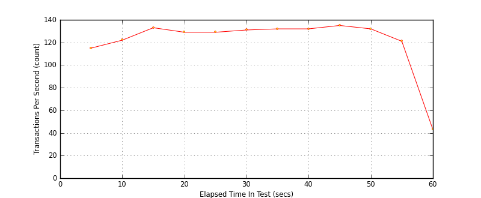

Performance Results Report
Summary
transactions: 8298
errors: 0
run time: 60 secs
rampup: 0 secs
test start: 2017-05-24 18:27:54
test finish: 2017-05-24 18:28:51
time-series interval: 5 secs
workload configuration:
| group name | threads | script name |
|---|
| user_group-21 | 40 | redis_stress.py |
| user_group-20 | 40 | redis_stress.py |
| user_group-23 | 40 | redis_stress.py |
| user_group-22 | 40 | redis_stress.py |
| user_group-25 | 40 | redis_stress.py |
| user_group-24 | 40 | redis_stress.py |
| user_group-2 | 40 | redis_stress.py |
| user_group-3 | 40 | redis_stress.py |
| user_group-1 | 40 | redis_stress.py |
| user_group-6 | 40 | redis_stress.py |
| user_group-7 | 40 | redis_stress.py |
| user_group-4 | 40 | redis_stress.py |
| user_group-5 | 40 | redis_stress.py |
| user_group-8 | 40 | redis_stress.py |
| user_group-9 | 40 | redis_stress.py |
| user_group-10 | 40 | redis_stress.py |
| user_group-11 | 40 | redis_stress.py |
| user_group-12 | 40 | redis_stress.py |
| user_group-13 | 40 | redis_stress.py |
| user_group-14 | 40 | redis_stress.py |
| user_group-15 | 40 | redis_stress.py |
| user_group-16 | 40 | redis_stress.py |
| user_group-17 | 40 | redis_stress.py |
| user_group-18 | 40 | redis_stress.py |
| user_group-19 | 40 | redis_stress.py |
All Transactions
Transaction Response Summary (secs)
| count | min | avg | 80pct | 90pct | 95pct | max | stdev |
|---|
| 8298 | 2.939 | 7.575 | 9.143 | 10.121 | 11.061 | 17.949 | 1.929 |
Interval Details (secs)
| interval | count | rate | min | avg | 80pct | 90pct | 95pct | max | stdev |
|---|
| 1 | 578 | 115.60 | 2.942 | 6.233 | 7.172 | 7.600 | 7.833 | 8.245 | 1.019 |
| 2 | 613 | 122.60 | 3.170 | 8.177 | 9.758 | 10.502 | 11.296 | 12.968 | 1.965 |
| 3 | 668 | 133.60 | 3.263 | 7.532 | 8.858 | 9.532 | 10.387 | 15.489 | 1.672 |
| 4 | 648 | 129.60 | 3.200 | 7.822 | 9.457 | 10.611 | 11.651 | 14.362 | 2.026 |
| 5 | 649 | 129.80 | 3.278 | 7.703 | 9.403 | 10.342 | 11.269 | 17.949 | 2.011 |
| 6 | 655 | 131.00 | 3.139 | 7.653 | 9.082 | 10.050 | 11.102 | 16.279 | 1.891 |
| 7 | 662 | 132.40 | 2.962 | 7.510 | 9.192 | 10.254 | 10.904 | 14.082 | 1.956 |
| 8 | 660 | 132.00 | 3.344 | 7.566 | 9.199 | 10.249 | 11.188 | 14.568 | 1.963 |
| 9 | 677 | 135.40 | 3.289 | 7.597 | 9.181 | 10.215 | 10.923 | 14.318 | 1.933 |
| 10 | 662 | 132.40 | 2.939 | 7.516 | 9.162 | 10.061 | 11.289 | 15.366 | 2.008 |
| 11 | 608 | 121.60 | 3.755 | 7.885 | 9.403 | 10.296 | 11.425 | 15.011 | 1.936 |
| 12 | 217 | 43.40 | 3.433 | 7.680 | 9.024 | 9.998 | 11.042 | 14.906 | 1.902 |
Graphs
Response Time: 5 sec time-series

Response Time: raw data (all points)

Throughput: 5 sec time-series
